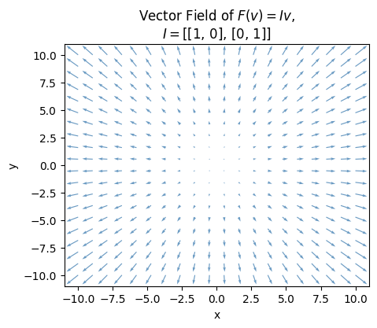
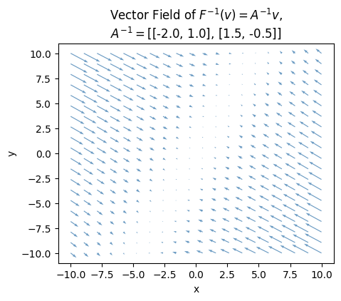

import numpy as np
import sympy as sp
import matplotlib.pyplot as plt
from utils.math_ml import *6 Vector Spaces
In this lesson I’ll continue on the topic of linear algebra by discussing vector spaces. Vector spaces are essential for abstracting linear algebra away from systems of equations and for visualizing linear algebra objects like vectors and matrices. Let’s get started.
Geometry of Vectors
I’ve introduced matrices and vectors so far kind of organically as the natural way to write and solve systems of linear equations. They’re good for a lot more than solving linear systems, however. For one thing, they possess important geometric properties. I’m now going to re-define the concepts covered so far, but in more geometric terms.
Visualizing Vectors
Let’s go back to the simple 2-dimensional case. Imagine you have a point in the xy-plane, call it \((x,y)\). Now, we can think of this as a single point, but we can also imagine it differently. Suppose there was an arrow pointing from the origin \((0,0)\) to the point \((x,y)\). For example, if the point was \((1,1)\), this arrow might look like this.
point = np.array([1, 1])
plot_vectors(point, title=f'Arrow From $(0,0)$ To $(1,1)$', ticks_every=0.5)Unlike the point \((x,y)\), the arrow \((x,y)\) has both a length and a direction. Its length is given by the Pythagorean Theorem. If the triangle has base \(x\) and height \(y\), then the length of the arrow is just its hypotenuse, i.e. \(r = \sqrt{x^2 + y^2}\). The direction of the arrow is its angle \(\theta\) with respect to the x-axis. This angle is just given by the inverse tangent of height over base, i.e. \(\theta = \tan^{-1}\big(\frac{y}{x}\big)\).
In the example plotted, the length is \(r=\sqrt{1+1}=\sqrt{2}\), and the angle is \(\theta = \tan^{-1}(1) = 45^\circ\). These two values uniquely specify the arrow, assuming it starts at the origin. If we know the length and direction, we know exactly which arrow we’re talking about.
What I’ve just shown is another way to define a vector. A vector is an arrow in the plane. Said differently, a vector is just a point that’s also been endowed with a length (or magnitude) and a direction. The x and y values are called components of a vector. Usually we’ll write a vector in bold-face and its components in regular type but with subscripts indicating which component. For example, \(\mathbf{v}=(v_x,v_y)\). Here’s the same arrow I plotted above, but explicitly labeled as a vector \(\mathbf{v}=(1,1)\). Its components are \(v_x=1\) and \(v_y=1\).
v = np.array([1, 1])
plot_vectors(v, title='$\mathbf{v}=(1,1)$', labels=['$\mathbf{v}$'], ticks_every=0.5)Notation: It’s common to represent vectors in a few different ways depending on the situation. One way to represent a vector is as a column vector. This is what I did when doing matrix-vector multiplication. Another way, what I just introduced, is a flat vector, or a 1-dimensional array. This is more common when thinking about a vector geometrically. Yet another way is to think of a vector as a row vector, which is the transpose of a column vector. All of these representations conceptually represent the same object, but their shapes are different. Here’s an example: The size-2 vector \(\mathbf{v}=(1,1)\) can be written in 3 different but all equivalent ways:
\[\begin{align*} &\text{Flat vector of shape } (2,): \mathbf{v} = (1,1), \\ &\text{Column vector of shape } (2,1): \mathbf{v} = \begin{pmatrix} 1 \\ 1 \\ \end{pmatrix}, \\ &\text{Row vector of shape } (1,2): \mathbf{v}^\top = \begin{pmatrix} 1 & 1 \\ \end{pmatrix}. \end{align*}\]
Be careful when working with vectors in code to make sure you’re using the right shapes for the right situation or you’ll get shape mismatch errors (or worse a silent bug).
Vector Operations
The magnitude, or length, of \(\mathbf{v}\) is typically denoted by the symbol \(||\mathbf{v}||\), called a norm,
\[||\mathbf{v}|| = \sqrt{v_x^2 + v_y^2}.\]
In the above example with \(\mathbf{v}=(1,1)\), its norm is \(||\mathbf{v}||=\sqrt{1+1}=\sqrt{2} \approx 1.414\).
Notice that the norm must be non-negative since it’s the square root of a sum of squares, i.e. \(||\mathbf{v}|| \geq 0\). This should sound right, after all negative lengths don’t make any sense.
What happens if we scale a vector \(\mathbf{v}\) by some scalar \(c\)? By the rules of scalar-vector multiplication, the new vector should be \(c\mathbf{v}=(cx,cy)\). Since the new vector has length \(||c\mathbf{v}||\), a little math shows that
\[||c\mathbf{v}|| = \sqrt{(cv_x)^2 + (cv_y)^2} = \sqrt{c^2(v_x^2 + v_y^2)} = |c| \sqrt{v_x^2 + v_y^2} = |c| \cdot ||\mathbf{v}||.\]
That is, the re-scaled vector \(c\mathbf{v}\) just gets its length re-scaled by \(c\). That’s why \(c\) is called a scalar. It rescales vectors. Notice if \(c\) is negative, the length stays the same, but the direction gets reversed \(180^\circ\) since in that case \(c\mathbf{v} = c(v_x, v_y) = -|c|(v_x,v_y)\).
Here’s what vector scaling looks like geometrically. I’ll plot the vector \(\mathbf{v}=(1,1)\) again, but scaled by two numbers, one \(c=2\), the other \(c=-1\). When \(c=2\), the vector just doubles its length. That’s the light blue arrow. When \(c=-1\), the vector reverses its direction \(180^\circ\), but maintains its length since \(|c|=1\). That’s the light orange arrow.
v = np.array([1, 1])
plot_vectors([v, -v, 2*v], xlim=(-2,3), ylim=(-2,3), title=f'Scaling Vectors', headwidth=7, ticks_every=1,
labels=['$\mathbf{v}$', '$-\mathbf{v}$', '$2\mathbf{v}$'],
colors=['black', 'salmon', 'steelblue'],
text_offsets=[[-0.2, 0.2], [-0.2, 0.4], [-0.2, 0.2]])
What does adding two vectors do? Let \(\mathbf{v}=(v_x,v_y)\) and \(\mathbf{w}=(w_x,w_y)\) be two vectors in the plane. Then their sum is \(\mathbf{v}+\mathbf{w} = (v_x+w_x,v_y+w_y)\). I’ll plot an example below with \(\mathbf{v}=(1,1)\) and \(\mathbf{w}=(1,3)\). Their sum should be
\[\mathbf{v}+\mathbf{w}=(1+1,1+3)=(2,4).\]
v = np.array([1, 1])
w = np.array([1, 3])
plot_vectors([v, w, v + w], xlim=(0, 3), ylim=(0, 5), title=f'Adding Two Vectors', ticks_every=1,
labels=['$\mathbf{v}$', '$\mathbf{w}$', '$\mathbf{v}+\mathbf{w}$'],
colors=['salmon', 'steelblue', 'black'])It may not be obvious yet what vector addition is doing geometrically. Let me plot it slightly differently. What I’ll do is plot the vectors “head to tail” by taking the tail of \(\mathbf{w}\) and placing it at the head of \(\mathbf{v}\). Then the head of this translated \(\mathbf{w}\) vector points at the head of the sum \(\mathbf{v}+\mathbf{w}\). We can do this “head to tail” stuff since the base of a vector is irrelevant. We can place the arrow wherever we want as long as we maintain its length and direction.
Informally speaking, to add two vectors, just stack them on top of each other head to tail, and draw an arrow from the starting point to the ending point. You can geometrically add arbitrarily many vectors this way, not just two. Just keep stacking them.
plot_vectors([v, w, v + w], xlim=(0, 3), ylim=(0, 5), title=f'Adding Two Vectors (Head to Tail)',
colors=['salmon', 'steelblue', 'black'],
tails=[[0, 0], [v[0], v[1]], [0, 0]], text_offsets=[[-0.5, -0.85], [0.5, -0.8], [-1.4, -1.6]],
labels=['$\mathbf{v}$', '$\mathbf{w}$', '$\mathbf{v}+\mathbf{w}$'],
zorders = [0, 1, 2], ticks_every=1)The norm satisfies what’s known as the triangle inequality: If \(\mathbf{v}\) and \(\mathbf{w}\) are two vectors, then the length of their sum is less than the sum of their individual lengths, i.e.
\[||\mathbf{v}+\mathbf{w}|| \leq ||\mathbf{v}|| + ||\mathbf{w}||.\]
You can see this by staring at the plot above. The added lengths of \(\mathbf{v}\) and \(\mathbf{w}\) is larger than the length of their sum \(\mathbf{v}+\mathbf{w}\). In fact, the only time the lengths will be equal is if \(\mathbf{v}\) and \(\mathbf{w}\) are parallel to each other.
What about subtracting two vectors? By combining the rules for scalar multiplication and vector addition, you can convince yourself that the difference of two vectors is also element-wise,
\[\mathbf{v}-\mathbf{w} = (v_x-w_x,v_y-w_y).\]
To visualize what subtracting two vectors looks like, notice we can write subtraction as a sum like this, \(\mathbf{w} + (\mathbf{v}-\mathbf{w}) = \mathbf{v}\). Now use the same trick for adding vectors, only this time placing \((\mathbf{v}-\mathbf{w})\) at the head of \(\mathbf{w}\), and noticing that it points to the sum of the two, which is \(\mathbf{v}\).
An easy way to remember what subtracting two vectors looks like is to connect the two vectors you’re subtracting with a line segment, and place the head on the first vector. This trick will never fail you.
v = np.array([1, 1])
w = np.array([1, 3])
plot_vectors([v, w, v - w], xlim=(-0.5, 1.5), ylim=(-0.5, 3.5), title=f'Subtracting Two Vectors', headwidth=4,
ticks_every=1, colors=['salmon', 'steelblue', 'black'],
tails=[[0, 0], [0, 0], [w[0], w[1]]], text_offsets=[[-0.5, -0.8], [-0.5, -1], [1.05, 3.8]],
labels=['$\mathbf{v}$', '$\mathbf{w}$', '$\mathbf{v}-\mathbf{w}$'])The Dot Product
It turns out we can understand both the lengths and angles of vectors in terms of a single operation called the dot product, also called the inner or scalar product. The dot product is a kind of multiplication between two vectors that returns a scalar. If \(\mathbf{v}=(v_x,v_y)\) and \(\mathbf{w}=(w_x,w_y)\) are two vectors in the plane, their dot product is defined as
\[\mathbf{v} \cdot \mathbf{w} = v_x w_x + v_y w_y.\]
That is, the dot product is just the sum of the element-wise products of the two vectors.
In terms of vectorized numpy code, the dot product is just the operation np.sum(v * w). Numpy also has a convenience function np.dot(v, w) that calculates it directly. Here’s the calculation of the dot product between the two vectors \(\mathbf{v}=(5,-1)\) and \(\mathbf{w}=(2,4)\). The answer should be
\[\mathbf{v} \cdot \mathbf{w} = 5 \cdot 2 + (-1) \cdot 4 = 10 - 4 = 6.\]
v = np.array([5, -1])
w = np.array([2, 4])
print(f'v . w = {np.dot(v, w)}')
np.sum(v * w) == np.dot(v, w)v . w = 6TrueAlgorithm Analysis: Evaluating the dot product uses \(2n-1\) or \(O(n)\) total FLOPS, since for a vector of size \(n\) there are \(n\) multiplications and \(n-1\) additions.
Here are some fairly trivial properties the dot product satisfies. These follow straight from the definition.
- The dot product of a vector with itself is nonnegative: \(\mathbf{v} \cdot \mathbf{v} \geq 0\).
- It commutes: \(\mathbf{v} \cdot \mathbf{w} = \mathbf{w} \cdot \mathbf{v}\).
- It distributes over scalar multiplication: \(c\mathbf{v} \cdot \mathbf{w} = \mathbf{v} \cdot c\mathbf{w} = c(\mathbf{v} \cdot \mathbf{w})\).
- It distributes over vector addition: \((\mathbf{u} + \mathbf{v}) \cdot \mathbf{w} = \mathbf{u} \cdot \mathbf{w} + \mathbf{v} \cdot \mathbf{w}\) and \(\mathbf{v} \cdot (\mathbf{u}+\mathbf{w}) = \mathbf{v} \cdot \mathbf{u} + \mathbf{v} \cdot \mathbf{w}\).
Notation: The dot product is often written in several different ways in different fields. Another notation arises by thinking of the dot product as the matrix multiplication of a row vector \(\mathbf{v}^\top = \begin{pmatrix}v_x & v_y \end{pmatrix}\) with a column vector \(\mathbf{w} = \begin{pmatrix} w_x \\ w_y \end{pmatrix}\). In that case,
\[ \mathbf{v}^\top \mathbf{w} = \begin{pmatrix} v_x & v_y \end{pmatrix} \begin{pmatrix} w_x \\ w_y \end{pmatrix} = v_x w_x + v_y w_y = \mathbf{v} \cdot \mathbf{w}. \]
This is the most commonly used notation for the dot product in machine learning. I’ll use it more frequently after this lesson.
We can write the norm or length of a vector in terms of the dot product. Observe that by dotting \(\mathbf{v}\) with itself, I get
\[\mathbf{v} \cdot \mathbf{v} = v_x^2 + v_y^2 = ||\mathbf{v}||^2.\]
Taking the square root of both sides, you can see that the norm or length of a vector is just the square root of its dot product with itself,
\[||\mathbf{v}|| = \sqrt{\mathbf{v} \cdot \mathbf{v}}.\]
We can also talk about the distance between any two vectors \(\mathbf{v}\) and \(\mathbf{w}\). Denote the distance between these two vectors as \(d(\mathbf{v}, \mathbf{w})\). Since the difference vector is \(\mathbf{v} - \mathbf{w}\), the distance between the two vectors is evidently just the length of the difference vector,
\[d(\mathbf{v}, \mathbf{w}) = ||\mathbf{v} - \mathbf{w}|| = \sqrt{(\mathbf{v} - \mathbf{w}) \cdot (\mathbf{v} - \mathbf{w})} = \sqrt{(v_x-w_x)^2 - (v_y-w_y)^2}.\]
For example, the distance between the two vectors \(\mathbf{v}=(1,1)\) and \(\mathbf{w}=(1, 0)\) is
\[d(\mathbf{v}, \mathbf{w}) = ||\mathbf{v} - \mathbf{w}|| = \sqrt{(1-1)^2 + (1-0)^2} = 1.\]
If a vector \(\mathbf{e}\) has norm \(||\mathbf{e}||=1\) it’s called a unit vector. We can convert any non-zero vector \(\mathbf{v}\) into a unit vector by dividing by its norm, which is called normalizing \(\mathbf{v}\). The unit vector gotten from normalizing \(\mathbf{v}\) I’ll call \(\mathbf{e_v}\). It’s given by
\[\mathbf{e_v} = \frac{\mathbf{v}}{||\mathbf{v}||}.\]
For example, if \(\mathbf{v}=(1,1)\), its norm is \(||\mathbf{v}||=\sqrt{2}\), so if we wanted to normalize it into a new unit vector \(\mathbf{e_v}\), we’d have
\[\mathbf{e_v} = \frac{\mathbf{v}}{||\mathbf{v}||} = \frac{\mathbf{v}}{\sqrt{2}} = \frac{1}{\sqrt{2}}(1,1) \approx (0.707, 0.707).\]
Unit vectors will always point in the same direction as the vector used to normalize them. The only difference is they’ll have length one. In the plane, unit vectors will always lie along the unit circle. Here’s a plot of this idea using the previous example.
v = np.array([1, 2])
ev = v / np.sqrt(2)
plot_vectors([v, ev], title='$\mathbf{e}_v = ||\mathbf{v}||^{-1} \mathbf{v}$', ticks_every=0.5, zorders=[0, 1],
text_offsets=[[0.01, 0.05], [-0.2, 0.2]], colors=['steelblue', 'red'],
labels=['$\mathbf{v}$', '$\mathbf{e}_v$'], headwidth=6)Projections
Let \(\mathbf{e}_x=(1,0)\). It’s the unit vector pointing along the positive x-axis. Notice the dot product between \(\mathbf{v}=(v_x, v_y)\) and \(\mathbf{e}_x\) is just
\[\mathbf{v} \cdot \mathbf{e}_x = v_x \cdot 1 + v_y \cdot 0 = v_x.\]
Evidently the dot product \(\mathbf{v} \cdot \mathbf{e}_x\) “picks” out the x-component of \(\mathbf{v}\), namely \(v_x\). The vector \(v_x \mathbf{e}_x = (v_x,0)\) gotten by rescaling \(\mathbf{e}_x\) by \(v_x\) is called the projection of \(\mathbf{v}\) onto the x-axis. It’s the vector you’d get by dropping \(\mathbf{v}\) perpendicular to the x-axis.
Similarly, if \(\mathbf{e}_y = (0,1)\) is the unit vector along the positive y-axis, we can “pick out” the y-component of \(\mathbf{v}\) by taking the dot product of \(\mathbf{v}\) with \(\mathbf{e}_y\), i.e. \(v_y = \mathbf{v} \cdot \mathbf{e}_y\). The vector \(v_y\mathbf{e}_y\) is the projection of \(\mathbf{v}\) onto the y-axis.
Evidently, then, \(\mathbf{v}\) is just the sum of projections of \(\mathbf{v}\) onto all of the axes,
\[\mathbf{v} = v_x \mathbf{e_x} + v_y \mathbf{e_y}.\]
This is yet another way to express a vector in terms of its components. Just project down onto the axes and sum up the linear combination.
Here’s what this looks like when \(\mathbf{v}=(0.5,1)\). In this example, the projection onto the x-axis is just \(v_x \mathbf{e}_x=(0.5, 0)\), and the projection onto the y-axis is just \(v_y \mathbf{e_y}=(0,1)\). Using these projections, we can write \(\mathbf{v}=(0.5,1)\) as \(\mathbf{v} = 0.5 \mathbf{e}_x + \mathbf{e}_y\).
v = np.array([1, 2])
ex = np.array([1, 0])
ey = np.array([0, 1])
plot_vectors([v, v[0] * ex, v[1] * ey], title='Projections Of $\mathbf{v}$', ticks_every=0.5,
text_offsets=[[0.02, 0.1], [-0.1, 0.2], [0.05, 0.05]], colors=['red', 'steelblue', 'steelblue'],
labels=['$\mathbf{v}$', '$v_x \mathbf{e}_x$', '$v_y \mathbf{e}_y$'], headwidth=4,
xlim=(-0.5, 2.5), ylim=(-0.5, 2.5))Linear Independence
I just showed we can decompose any vector \(\mathbf{v} \in \mathbb{R}^2\) into its projections \(\mathbf{v} = v_x \mathbf{e}_x + v_y \mathbf{e}_y\). The fact we can do this is because the unit vectors \(\mathbf{e}_x\) and \(\mathbf{e}_y\) are special, for a few reasons.
The first reason these vectors are special is that they don’t lie along the same line in the plane. Said differently, we can’t write one vector as a scalar multiple of the other, \(\mathbf{e}_x \neq c \mathbf{e}_y\) for any scalar \(c\). Vectors with this property are called linearly independent.
More generally, a set of \(k\) vectors \(\mathbf{v}_0, \mathbf{v}_1, \cdots, \mathbf{v}_{k-1}\) is called linearly independent if no one vector \(\mathbf{v}_j\) in the set can be written as a linear combination of the rest, i.e. for any choice of scalars \(c_i\),
\[\mathbf{v}_j \neq \sum_{i \neq j} c_i \mathbf{v}_i.\]
A set of vectors that isn’t linearly independent is called linearly dependent. In a linearly dependent set, you can always express at least one vector as a linear combination of the rest, for example by finding a choice of scalars \(c_i\), you could write \(\mathbf{v}_0\) as
\[\mathbf{v}_0 = \sum_{i=1}^{k-1} c_i \mathbf{v}_i = c_1 \mathbf{v}_1 + c_2 \mathbf{v}_2 + \cdots + c_{k-1} \mathbf{v}_{k-1}.\]
Linearly dependent sets of vectors are redundant in a sense. We have more than we need. We can always keep dropping vectors from the set until the ones remaining are linearly independent.
The vector space spanned by all linear combinations of a set of vectors is called the span of that set. The span of a single vector will always be a line, since a linear combination of any one vector is just the scalar multiples of that vector. The span of any two linearly independent vectors will always be a plane. The span of \(k\) linearly independent vectors will form a \(k\)-dimensional hyperplane.
As a simple example, consider the following set of vectors in the plane,
\[\begin{align*} \mathbf{v}_0 &= (1, 0), \\ \mathbf{v}_1 &= (0, 1), \\ \mathbf{v}_2 &= (1, 1). \end{align*}\]
If you stare at these for a second, you’ll see that \(\mathbf{v}_2 = \mathbf{v}_0 + \mathbf{v}_1\), so this set can’t be linearly independent. The third vector is redundant. Any two vectors in this set span the exact same plane \(\mathbb{R}^2\). In fact, you’ll never have more than 2 linearly independent vectors of size 2. Why?
v0 = np.array([1, 0])
v1 = np.array([0, 1])
v2 = np.array([1, 1])
plot_vectors(
[v2, v0, v1], colors=['salmon', 'steelblue', 'limegreen'], xlim=(-0.5, 1.5), ylim=(-0.5, 1.5),
ticks_every=0.5, zorders=[0, 1, 2, 3], headwidth=5, text_offsets=[[0.03, 0.05], [0.03,0.05], [0.03,0.05]],
title='$\mathbf{v}_0$, $\mathbf{v}_1$, $\mathbf{v}_2=\mathbf{v}_0+\mathbf{v}_1$',
labels=['$\mathbf{v}_2$', '$\mathbf{v}_0$', '$\mathbf{v}_1$'])For vectors in \(\mathbb{R}^2\), there are only two possibilities, they either lie on the same line, or they span the whole plane. This follows from the fact that any vector \(\mathbf{v}\) can be decomposed as \(\mathbf{v} = v_x \mathbf{e}_x + v_y \mathbf{e}_y\). An implication of this fact is that a set of vectors in \(\mathbb{R}^2\) can only be linearly independent if it contains only one or two vectors. If it contains a third vector, that vector must be a linear combination of the other two. The maximum number of linearly independent vectors in a set is the dimension of the vector space. Since \(\mathbb{R}^2\) is 2-dimensional, it can only sustain 2 linearly independent vectors at a time.
Basis Vectors
In \(\mathbb{R}^2\), if we can find any two vectors \(\mathbf{a}\) and \(\mathbf{b}\) that are linearly independent, then we can write any other vector \(\mathbf{v}\) as a linear combination of those two vectors,
\[\mathbf{v} = v_a \mathbf{a} + v_b \mathbf{b}.\]
The set \(\{\mathbf{a}, \mathbf{b}\}\) is called a basis. We can use vectors in this set as a “basis” to write any other vector.
More generally, a set of \(k\) vectors \(\mathbf{v}_0, \mathbf{v}_1, \cdots, \mathbf{v}_{k-1}\) form a basis for a vector space if the following two conditions hold,
- The vectors are all linearly independent,
- The vectors span the full vector space.
Another way of saying the same thing is that a basis is a set of exactly \(n\) linearly independent vectors, where \(n\) is the dimension of the vector space. A basis contains the minimal number of vectors needed to span the vector space.
The special vectors \(\mathbf{e}_x\) and \(\mathbf{e}_y\) form a basis for \(\mathbb{R}^2\), since we can write any other vector as a linear combination of those two. Not only are these two vectors a basis, however. They satisfy two other useful properties,
- They’re both unit vectors, \(||\mathbf{e}_x|| = ||\mathbf{e}_y|| = 1\).
- They’re orthogonal to each other, that is, \(\mathbf{e}_x \cdot \mathbf{e}_y = 0\).
A basis satisfying these two properties is called an orthonormal basis. An orthonormal basis is special in that it allows us to pick out the components of a vector directly by just taking dot products with the basis vectors. It’s only true in an orthonormal basis that we can write the components of a vector \(\mathbf{v}\) as,
\[\begin{align*} v_x &= \mathbf{v} \cdot \mathbf{e}_x, \\ v_y &= \mathbf{v} \cdot \mathbf{e}_y. \end{align*}\]
The set \(\{\mathbf{e}_x, \mathbf{e}_y\}\) is only one example of an orthonormal basis for \(\mathbb{R}^2\). It’s called the standard basis, since it’s the basis whose vectors point along the usual positive x and y axes.
Expressing any vector in terms of its basis is just projecting the vector down onto each of the basis axes. Let’s do a quick example. Let \(\mathbf{v}=(1.25,2)\) be a vector. Decomposed into the standard basis we just get
\[\mathbf{v} = 1.25 \mathbf{e}_x + 2 \mathbf{e}_y.\]
Graphically this just looks as follows. We’ve already seen a plot like this, except this time I’m including the basis vectors \(\mathbf{e}_x\) and \(\mathbf{e}_y\) explicitly. Notice that the two basis vectors form a \(90^\circ\) angle, i.e. they’re perpendicular. I’ll show in a moment that this is implied by the fact that \(\mathbf{e}_x \cdot \mathbf{e}_y = 0\).
v = np.array([1.25, 2])
ex = np.array([1, 0])
ey = np.array([0, 1])
plot_vectors(
[v, v[0] * ex, v[1] * ey, ex, ey], colors=['red', 'steelblue', 'steelblue', 'black', 'black'],
ticks_every=1, zorders=[0, 1, 2, 3, 4, 5], headwidth=5,
text_offsets=[[0,0], [0,0.2], [0.05,0], [-0.2,0.2], [0.05,0]],
title='$\mathbf{v}=v_x \mathbf{e}_x + v_y \mathbf{e}_y$',
labels=['$\mathbf{v}$', '$v_x \mathbf{e}_x$', '$v_y \mathbf{e}_y$', '$\mathbf{e}_x$', '$\mathbf{e}_y$'])Of course, I already said the standard basis isn’t the only orthonormal basis for \(\mathbb{R}^2\) we could choose. Here’s an example of another one that would work equally well. Let \(\mathbf{e}_a=\frac{1}{\sqrt{2}} (1,1)\) and \(\mathbf{e}_b=\frac{1}{\sqrt{2}} (-1,1)\). Notice that both vectors have unit length, and they’re orthogonal since \(\mathbf{e}_a \cdot \mathbf{e}_b = 0\). Thus, they form an orthonormal basis for \(\mathbb{R}^2\). In this basis, \(\mathbf{v}=(1.25, 2)\) would be written
\[\mathbf{v} = (\mathbf{v} \cdot \mathbf{e}_a) \mathbf{e}_a + (\mathbf{v} \cdot \mathbf{e}_b) \mathbf{e}_b \approx 2.298 \mathbf{e}_a + 0.530 \mathbf{e}_b.\]
This is a very different representation for \(\mathbf{v}\). Nevertheless, the two basis vectors are still perpendicular to each other. You can see a plot of this below.
There are infinitely many orthonormal bases for \(\mathbb{R}^2\). Just take any two perpendicular vectors in the plane and normalize them to unit length and they’ll form a valid orthonormal basis.
v = np.array([1.25, 2])
ea = np.array([1, 1]) / np.sqrt(2)
eb = np.array([-1, 1]) / np.sqrt(2)
vectors = [v, np.dot(v, ea) * ea, np.dot(v, eb) * eb, ea, eb]
plot_vectors(
vectors, ticks_every=1, zorders=[0, 1, 5, 3, 4, 2], headwidth=7,
colors=['red', 'steelblue', 'steelblue', 'black', 'black'],
text_offsets=[[0, 0], [0.03, 0], [-0.3, -0.65], [-0.1, -0.48], [-0.2, 0.15]],
title='$\mathbf{v}=v_a \mathbf{e}_a + v_b \mathbf{e}_b$',
labels=['$\mathbf{v}$', '$v_a \mathbf{e}_a$', '$v_b \mathbf{e}_b$', '$\mathbf{e}_a$', '$\mathbf{e}_b$'])Cosine Similarity
Just like we can express the length of a vector using the dot product, it turns out we can also express the angle between any two vectors in the plane using the dot product. If \(\theta\) is the angle between two vectors \(\mathbf{v}\) and \(\mathbf{w}\), it turns out the dot product is given by
\[\mathbf{v} \cdot \mathbf{w} = ||\mathbf{v}|| \cdot ||\mathbf{w}|| \cos \theta.\]
Note that both sides of this equation are scalars since the dot product is a scalar and the product of norms is a scalar. If you’re good at trigonometry, you can convince yourself this formula must be true by projecting \(\mathbf{v}\) onto \(\mathbf{w}\) similar to the way we did projections onto the x and y axes before. The difference this time is that the component of \(\mathbf{v}\) in the direction of \(\mathbf{w}\) is not \(v_x\) or \(v_y\) anymore, but instead \(||\mathbf{v}|| \cos \theta\).
You can see two special cases of this formula by looking at what happens when the two vectors are parallel or perpendicular. If the two vectors are parallel, then \(\theta = 0^\circ, 180^\circ\), so \(\cos \theta = \pm 1\), so \(\mathbf{v} \cdot \mathbf{w} = \pm ||\mathbf{v}|| \cdot ||\mathbf{w}||\). More importantly, if the two vectors are perpendicular, then \(\theta = 90^\circ, 270^\circ\), so \(\cos \theta = 0\), so \(\mathbf{v} \cdot \mathbf{w} = 0\). That is, perpendicular vectors are orthogonal. They mean the same thing.
It’s more common to express this formula with \(\cos \theta\) on one side and the vector terms on the other so you can solve for the angle (or more commonly just the cosine of the angle). In this case, we have \[\cos \theta = \frac{\mathbf{v} \cdot \mathbf{w}}{||\mathbf{v}|| \cdot ||\mathbf{w}||}.\]
What matters more than anything is what this formula says and how to use it. Suppose, for example, you want to find the angle between the two vectors \(\mathbf{v} = (1,1)\) and \(\mathbf{w} = (0, -1)\). Then you’d have
\[\begin{align*} \mathbf{v} \cdot \mathbf{w} &= 1 \cdot 0 + 1 \cdot (-1) = -1, \\ ||\mathbf{v}|| &= \sqrt{1^2 + 1^2} = \sqrt{2}, \\ ||\mathbf{w}|| &= \sqrt{0^2 + (-1)^2} = 1. \end{align*}\]
Plugging this into the cosine formula gives,
\[ \cos \theta = \frac{-1}{\sqrt{2}} \quad \Longrightarrow \quad \theta = \cos^{-1}\bigg(\frac{-1}{\sqrt{2}}\bigg) = 135^\circ. \]
You can verify this is correct by plotting the two vectors and confirming that they’re about \(135^\circ\) from each other, which corresponds to about 1.25 quarter turns around a circle. It’s interesting to note that the dot product will only be negative when the angle between the two vectors is obtuse, i.e. more than \(90^\circ\), which is of course the case here.
v = np.array([1, 1])
w = np.array([0, -1])
plot_vectors([v, w], title='$\mathbf{v} \cdot \mathbf{w} = ||\mathbf{v}||||\mathbf{w}|| \cos \\theta$',
text_offsets=[[0, 0], [0.1, 0]], ticks_every=0.5, xlim=(-1, 2), ylim=(-1.5, 1.5),
labels=['$\mathbf{v}$', '$\mathbf{w}$'], colors=['red', 'steelblue'], headwidth=7)In machine learning, this formula for \(\cos \theta\) is called the cosine similarity. The reason for this is that the dot product itself is a measure of how similar two vectors are. To see why, consider two special cases:
- The two vectors are parallel: This is as large as the dot product between two vectors can get in absolute value. The vectors are as similar as they can be in a sense. Up to a scalar multiple, they contain the same information.
- The two vectors are perpendicular: This is as small as the dot product between two vectors can get in absolute value. The two vectors are as different as they can be in a sense. They share pretty much no information. Information about one vector tells you basically nothing about the other.
The cosine similarity is a function of two input vectors \(\mathbf{v}\) and \(\mathbf{w}\). Since we don’t actually care about the angle \(\theta\) usually, we’ll more often denote the cosine similarity using a notation like \(\cos(\mathbf{v},\mathbf{w})\) to make it clear it’s a function of its two input vectors,
\[\cos(\mathbf{v},\mathbf{w}) = \frac{\mathbf{v} \cdot \mathbf{w}}{||\mathbf{v}|| \cdot ||\mathbf{w}||}.\]
Note the cosine similarity is just a normalized dot product, since dividing by the norms forces \(-1 \leq \cos(\mathbf{v},\mathbf{w}) \leq 1\). It thus captures the same idea of similarity that the dot product does, but it’s more useful when the lengths of vectors get out of control. This is particularly likely to happen in high dimensions, when \(n >> 2\). This is the so-called “curse of dimensionality”. We’ll come back to this idea in future lessons.
Here’s a quick implementation of the cosine similarity function using numpy. There’s no built-in function to do it, but it’s easy enough to implement by making judicious use of the np.dot function. It should give the same answer found above for \(\cos \theta\), which is \(-\frac{1}{\sqrt{2}} \approx -0.707\).
def cosine_similarity(v, w):
return np.dot(v, w) / np.sqrt(np.dot(v, v) * np.dot(w, w))
print(f'cos(v, w) = {cosine_similarity(v, w)}')cos(v, w) = -0.7071067811865475Algorithm Analysis: Like the dot product, this function uses only \(O(n)\) FLOPS. There are three independent dot product operations happening here, each adding \(O(n)\) FLOPS. Since the outputs of dot products are scalars, the multiply and divide only add one FLOP each. The square root isn’t obvious, but you can assume it takes some constant number of FLOPS as well. The total must therefore be \(O(n)\).
Other Norms
It turns out that the norm I defined above is only one way to measure the length of a vector. It’s the most natural way to do so sense it corresponds to your intuitive notions of length, which itself relates to the Pythagorean Theorem. There are other ways to quantify vector length as well that aren’t as intuitive. Because they do sometimes show up in machine learning I’ll briefly mention a couple of these here.
The norm I’ve covered is called the 2-norm. It’s called this because it involves squares and square roots. We can write it in the form
\[||\mathbf{v}|| = ||\mathbf{v}||_2 = \big(v_x^2 + v_y^2 \big)^{1/2}.\]
It turns out we can replace the twos with any other positive number \(p>1\) to get generalized norms, called p-norms,
\[||\mathbf{v}||_p = \big(v_x^p + v_y^p \big)^{1/p}.\]
The p-norms cover a large class of norms, since any \(1 \leq p \leq \infty\) can define a valid norm. The 2-norm, as you’d guess, occurs when \(p=2\). A couple of other norms that show up in machine learning are the 1-norm when \(p=1\), and the infinity norm when \(p=\infty\). For 2-dimensional vectors, these norms are
\[\begin{align*} ||\mathbf{v}||_1 &= |v_x| + |v_y|, \\ ||\mathbf{v}||_\infty &= \max\big(|v_x|, |v_y|\big). \end{align*}\]
Here’s an example. I’ll calculate the \(p=1, 2, \infty\) norms for the vector \(\mathbf{v}=(1,-2)\). We have,
\[\begin{align*} ||\mathbf{v}||_1 &= |1| + |-2| = 1 + 2 = 3, \\ ||\mathbf{v}||_2 &= \sqrt{1^2 + (-2)^2} = \sqrt{1 + 4} = \sqrt{5} \approx 2.236, \\ ||\mathbf{v}||_\infty &= \max\big(|1|, |-2|\big) = \max(1, 2) = 2. \end{align*}\]
Notice that \(||\mathbf{v}||_1 \geq ||\mathbf{v}||_2 \geq ||\mathbf{v}||_\infty\). This is a general fact.
It’s a little hard right now to describe why these norms are useful in machine learning since we don’t currently have the context. Just know that these norms do come up sometimes. I’ll go into more depth on the uses of these different norms as we apply them. In practice though, we’ll probably work with the regular 2-norm maybe 90% of the time.
In numpy, you can calculate any \(p\)-norm using the function np.linalg.norm(v, ord=p). Here’s an example.
v = np.array([1, -2])
print(f'1-Norm of v: {np.linalg.norm(v, ord=1)}')
print(f'2-Norm of v: {np.linalg.norm(v, ord=2)}')
print(f'Infinity-Norm of v: {np.linalg.norm(v, ord=np.inf)}')1-Norm of v: 3.0
2-Norm of v: 2.23606797749979
Infinity-Norm of v: 2.0Linear Maps
So where do matrices fit into all this vector space stuff? It turns out that matrices correspond to functions between vectors to vectors. These are called linear maps. A linear map is a vector-valued function from one vector space to another that preserves the properties of vectors. In \(\mathbb{R}^2\), a linear map is a function between vectors \(\mathbf{v}=(v_x,v_y)\) and \(\mathbf{w}=(w_x,w_y)\) of the form
\[\mathbf{w} = (w_x, w_y) = (av_x + bv_y, cv_x + dv_y) = \mathbf{F}(\mathbf{v}).\]
That is, each component of the output vector \(\mathbf{w}\) is a linear combination of the input vector \(\mathbf{v}\). Now, if you stare at this function for a little bit, you should see that this kind of looks like a \(2 \times 2\) system of linear equations,
\[\begin{alignat*}{3} av_x & {}+{} & bv_y & {}={} & w_x \\ cv_x & {}+{} & dv_y & {}={} & w_y. \end{alignat*}\]
This of course means the linear map is equivalent to a matrix-vector equation. If we identify \(\mathbf{v}\) and \(\mathbf{w}\) with \(2 \times 1\) column vectors, and define a \(\mathbf{A}\) by
\[ \mathbf{A} = \begin{pmatrix} a & b \\ c & d \end{pmatrix}, \]
then the linear map \(\mathbf{w} = \mathbf{F}(\mathbf{v})\) is equivalent to the matrix-vector equation \(\mathbf{w}=\mathbf{A}\mathbf{v}\), or
\[\mathbf{F}(\mathbf{v}) = \mathbf{A}\mathbf{v}.\]
In fact, every linear map \(\mathbf{F}(\mathbf{v})\) can be identified with some matrix equation \(\mathbf{A}\mathbf{v}\). Knowing \(\mathbf{A}\) (in some basis) is equivalent to knowing the linear map itself.
But why are linear maps important? The main reason is that they preserve linear structure. Notice that I can define a line through any vector \(\mathbf{v}\) by scaling it with some parameter \(t\). If I apply a linear map to this line I’d get \(\mathbf{F}(t\mathbf{v}) = t\mathbf{F}(\mathbf{v})\). Check it yourself from the definition. Said differently, linear maps map lines to lines, thus preserving the linear structure of the vector space. The new line won’t usually be the original line. It may get rotated. But it’s still a line.
Let’s try to visualize what a linear map does by defining a particular \(2 \times 2\) matrix \(\mathbf{A}\) and seeing how it acts on inputs \(\mathbf{v}\).
A = np.array([[1, -0.1], [0.1, 1]])
v = np.array([1, 1]).reshape(-1, 1)
plot_vectors([v.flatten(), (A @ v).flatten()], colors=['black', 'red'],
labels=['$\mathbf{{v}}$', '$\mathbf{{A}}\mathbf{{v}}$'], text_offsets=[[0.01, -0.1], [-0.1, 0.05]],
title='Linear Map: $\mathbf{{w}} = \mathbf{{A}}\mathbf{{v}}$', xlim=(0, 1.5), ylim=(0, 1.5))Why stop there? Let’s apply the linear map a whole bunch of times recursively and see what happens to the output vectors \(\mathbf{w}\). I’ll plot each of the \(k=63\) vectors in the following sequence, \[\mathbf{v}, \ \mathbf{A}\mathbf{v}, \ \mathbf{A}^2\mathbf{v}, \ \cdots, \ \mathbf{A}^{63}\mathbf{v}.\]
Note each power \(\mathbf{A}^j\) here is a matrix power, defined by applying matrix multiplication over and over \(k\) times. It’s not the element-wise power.
For the particular values in this plot I’ll choose \(\mathbf{v}=\begin{pmatrix} 1 \\ 1 \end{pmatrix}\) and \(\mathbf{A}=\begin{pmatrix} 1 & -0.1 \\ 0.1 & 1 \end{pmatrix}\). The original vector \(\mathbf{v}\) is colored black. Notice that each linear map is slowly rotating the vector counterclockwise and also slightly stretching it. By the time it gets back around it’s already maybe 40% longer than the original vector.
In fact, every linear map between two vectors in the plane will do at least one of these two things: rotate the input vector in the plane, or stretch (or shrink) it by some factor. I just chose a particularly nice one to plot.
k = 63
vectors = [(np.linalg.matrix_power(A, i) @ v).flatten() for i in range(k)]
title = f"""
$\mathbf{{v}}, \mathbf{{A}}\mathbf{{v}}, \mathbf{{A}}^2\mathbf{{v}}, \cdots, \mathbf{{A}}^{{{k}}}\mathbf{{v}}$
""".strip()
plot_vectors(vectors, colors=['black']+['red']*(k-1), title=title, xlim=(-2.5, 2.5), ylim=(-2.5, 2.5))What do you suppose the transpose of \(\mathbf{A}\) does in this particular example? That is, suppose you use \(\mathbf{A}^\top\) instead. Notice what would happen is the minus sign would move from the upper right to the lower left. You can verify that this will just cause the matrix to spin vectors the other way, clockwise instead of counterclockwise.
In fact, what I’ve just shown is a special case of what happens when you compose linear maps: Composition of linear maps is equivalent to matrix multiplication. If \(\mathbf{F}(\mathbf{w}) = \mathbf{A}\mathbf{w}\) and \(\mathbf{G}(\mathbf{v}) = \mathbf{B}\mathbf{v}\) are two linear maps, then their composite function \(\mathbf{F}(\mathbf{G}(\mathbf{v}))\) is another linear map given by
\[\mathbf{F}(\mathbf{G}(\mathbf{v})) = \mathbf{A}\mathbf{B}\mathbf{v}.\]
This is perhaps the real reason matrix multiplication is important. Because linear maps are important, and applying multiple linear maps in sequence is just matrix multiplication.
Two other special linear maps worth being aware of are the identity map and the inverse map. The identity map is the map \(\mathbf{F}(\mathbf{v}) = \mathbf{I}\mathbf{v}\). What does it do to \(\mathbf{v}\)? Let’s see. We can get the identity matrix in numpy using np.eye(n), where n is the dimension (in this case 2).
It looks like nothing is happening. That is, \(\mathbf{I}\mathbf{v} = \mathbf{v}\). You can verify this by writing this out in components and seeing what the matrix-vector product is. In fact, \(\mathbf{I}\mathbf{v} = \mathbf{v}\) is always true, for any dimension, and any vector \(\mathbf{v}\).
Aside: Notice that I had to flatten the vectors here to do the plot. That’s because I’ve sneakily defined vectors in two different ways, first as a column vector of shape \((2,1)\) and then as a flat vector of shape \((2,)\).
I = np.eye(2)
plot_vectors([v.flatten(), (I @ v).flatten()], zorders=[0, 1],
title='Identity Map: $\mathbf{F}(\mathbf{v})=\mathbf{I}\mathbf{v}$',
labels=['$\mathbf{v}$', '$\mathbf{I}\mathbf{v}$'],
colors=['black', 'red'], xlim=(-0.5, 1.5), ylim=(-0.5, 1.5),
text_offsets=[[0, -0.25], [-0.2, 0.1]])
The inverse map is just the linear map that undoes the original linear map \(\mathbf{F}(\mathbf{v}) = \mathbf{A}\mathbf{v}\), i.e.
\[\mathbf{F}^{-1}(\mathbf{v}) = \mathbf{A}^{-1}\mathbf{v}.\]
You can see what this does by applying the two maps in succession. Here’s an example of doing this with the vector \(\mathbf{v}=(1,1)\) and the \(90^\circ\) rotation matrix
\[\mathbf{A}=\begin{pmatrix} 0 & 1 \\ -1 & 0 \end{pmatrix}.\]
Applying \(\mathbf{F}(\mathbf{v})\) followed by \(\mathbf{F}^{-1}(\mathbf{v})\) just gives the same vector \(\mathbf{v}\) back. This just follows from the fact that \(\mathbf{A}^{-1}\mathbf{A}=\mathbf{I}\), so the composition \(\mathbf{F}^{-1}(\mathbf{F}(\mathbf{v}))=\mathbf{v}\).
A = np.array([[0, 1], [-1, 0]])
plot_vectors([v.flatten(), (A @ v).flatten(), (np.linalg.inv(A) @ A @ v).flatten()], zorders=[2, 1, 0],
title='Inverse Map: $\mathbf{F}^{-1}(\mathbf{v})=\mathbf{A}^{-1}\mathbf{v}$',
labels=['$\mathbf{v}$', '$\mathbf{A}\mathbf{v}$', '$\mathbf{A}^{-1}\mathbf{A}\mathbf{v}$'],
colors=['black', 'red', 'blue'], xlim=(-0.5, 2), ylim=(-1.5, 1.5),
text_offsets=[[0, -0.3], [0.05, -0.05], [0, 0.1]])
I’ll close this section by mentioning that we’re often not interested in linear maps in practice, but affine maps. Recall that a simple linear function might have the form \(y=ax\). An affine function has the form \(y=ax+b\). That is, an affine function is just a linear function shifted upward by \(b\). The same idea extends to maps between vectors.
An affine map is just a linear map shifted by some constant translation vector \(\mathbf{b}\),
\[\mathbf{F}(\mathbf{v}) = \mathbf{A}\mathbf{v} + \mathbf{b}.\]
The only difference between an affine map and a linear map is that vectors will get not just scaled and rotated, but also translated by \(\mathbf{b}\). In machine learning, the translation vector \(\mathbf{b}\) often called a bias vector.
Here’s a plot of what this looks like using the same previous matrix, and a bias vector \(\mathbf{b}=(-1, -1)\). I want to show that \(\mathbf{A}\mathbf{v} + \mathbf{b}\) is really just the vector \(\mathbf{A}\mathbf{v}\), but translated so its tail lies at \(\mathbf{b}\). To do so, I’ll plot the vector \(\mathbf{A}\mathbf{v} + \mathbf{b}\) with its tail at the origin, as well as the vector \(\mathbf{A}\mathbf{v}\) with its tail shifted to the point \(\mathbf{b}\). What matters is that the head of both of these vectors is the same. The main vector \(\mathbf{A}\mathbf{v} + \mathbf{b}\) is shown in red.
A = np.array([[0, 1], [-1, 0]])
v = np.array([1, 1]).reshape(-1, 1)
b = np.array([-1, -1]).reshape(-1, 1)
vectors = [x.flatten() for x in [v, A @ v, A @ v + b, b]]
plot_vectors(
vectors, xlim=(-1.5, 1.5), ylim=(-2.5, 1.5), headwidth=5, colors=['black', 'blue', 'red', 'green'],
labels=['$\mathbf{{v}}$', '$\mathbf{{A}}\mathbf{{v}}$',
'$\mathbf{{A}}\mathbf{{v}} + \mathbf{{b}}$', '$\mathbf{{b}}$'],
text_offsets=[[0, 0], [-1.4, -1.25], [0.07, 0], [-0.2, 0.1]],
tails=[[0, 0], [b[0][0], b[1][0]], [0, 0], [0, 0]],
title='Affine Map: $\mathbf{F}(\mathbf{v}) = \mathbf{A}\mathbf{v} + \mathbf{b}$')\(n\)-dimensional Vector Spaces
It may seem like everything I’ve said is special for the case of \(n=2\) dimensions, but it’s really not. Every single thing I’ve said extends exactly how you’d expect to vectors of arbitrary size \(n\). The only difference now is that you can’t visualize the stuff anymore. You just have to trust the math. I’ll restate all of the definitions from above here, but for \(n\)-dimensional vector spaces instead.
A vector of size \(n\) can be defined as a 1-dimensional array of real numbers \(x_0,x_1,x_2,\cdots,x_{n-1}\),
\[\mathbf{x} = (x_0,x_1,x_2,\cdots,x_{n-1}).\]
Vectors can be added together, and multiplied by scalars. Vector addition is defined element-wise. If \(\mathbf{x}\) and \(\mathbf{y}\) are two vectors, then
\[\mathbf{x} + \mathbf{y} = (x_0+y_0, x_1+y_1, \cdots, x_{n-1}+y_{n-1}).\]
To keep a running example through this section, I’ll use numpy to create two vectors \(\mathbf{x}\) and \(\mathbf{y}\) each of size \(n=10\). Here’s their vector sum.
x = np.array([1, 2, 3, 4, 5, 5, 4, 3, 2, 1])
y = np.array([1, 0, -1, 0, 1, 0, -1, 0, 1, 0])
print(f'x + y = {x + y}')x + y = [2 2 2 4 6 5 3 3 3 1]Scalar multiplication is defined similarly. If \(c \in \mathbb{R}\) is some scalar and \(\mathbf{x}\) is some vector, then
\[c\mathbf{x} = (cx_0,cx_1,\cdots,cx_{n-1}).\]
c = 5
print(f'c * x = {c * x}')c * x = [ 5 10 15 20 25 25 20 15 10 5]Vectors of size \(n\) live in the \(n\)-dimensional vector space \(\mathbb{R}^n\). By definition, any linear combination of two vectors must also live in the same vector space. That is, if \(\mathbf{x}, \mathbf{y} \in \mathbb{R}^n\) are two vectors and \(a,b \in \mathbb{R}\) are two scalars, then \(a \mathbf{x} + b \mathbf{y} \in \mathbb{R}^n\).
The dot product or inner product between two vectors \(\mathbf{x}\) and \(\mathbf{y}\) of size \(n\) is defined as their sum product, i.e.
\[\mathbf{x} \cdot \mathbf{y} = x_0y_0 + x_1y_1 + \cdots + x_{n-1}y_{n-1}.\]
print(f'x . y = {np.dot(x, y)}')x . y = 1The norm (technically the 2-norm) of a vector is defined as the square root of its dot product with itself, i.e.
\[||\mathbf{x}|| = ||\mathbf{x}||_2 = \sqrt{\mathbf{x} \cdot \mathbf{x}} = \sqrt{x_0^2 + x_1^2 + \cdots + x_{n-1}^2}.\]
This is just the \(n\)-dimensional generalization of the Pythagorean Theorem. We can also consider other \(p\) norms as well. In particular, the cases when \(p=1\) and \(p=\infty\) sometimes show up in applications,
\[\begin{align*} ||\mathbf{x}||_1 &= \sum_{i=0}^{n-1} |x_i| = |x_0| + |x_1| + \cdots + |x_{n-1}|, \\ ||\mathbf{x}||_\infty &= \max_{i=0,\cdots,n-1} |x_i| = \max\big(|x_0|, |x_1|, \cdots, |x_{n-1}|\big). \end{align*}\]
It will always be the case that \(||\mathbf{x}||_1 \geq ||\mathbf{x}||_2 \geq ||\mathbf{x}||_\infty\).
print(f'1-Norm of x: {np.linalg.norm(x, ord=1)}')
print(f'2-Norm of x: {np.linalg.norm(x, ord=2)}')
print(f'Infinity-Norm of x: {np.linalg.norm(x, ord=np.inf)}')1-Norm of x: 30.0
2-Norm of x: 10.488088481701515
Infinity-Norm of x: 5.0The distance \(d(\mathbf{x}, \mathbf{y})\) between two vectors \(\mathbf{x}\) and \(\mathbf{y}\) is just the norm of their difference vector,
\[d(\mathbf{x}, \mathbf{y}) = ||\mathbf{x}-\mathbf{y}|| = \sum_{i=0}^{n-1} \sqrt{(x_i-y_i)^2} = \sqrt{(x_0-y_0)^2 + (x_1-y_1)^2 + \cdots + (x_{n-1}-y_{n-1})^2}.\]
We can define the angle between any two vectors \(\mathbf{x}\) and \(\mathbf{y}\) of size \(n\) by making use of the same identity for the dot product, which still holds in \(n\) dimensions,
\[\mathbf{x} \cdot \mathbf{y} = ||\mathbf{x}|| \cdot ||\mathbf{y}|| \cos \theta.\]
Using this identity, we can define the cosine similarity \(\cos(\mathbf{x}, \mathbf{y})\) by solving for \(\cos \theta\),
\[\cos(\mathbf{x}, \mathbf{y}) = \frac{\mathbf{x} \cdot \mathbf{y}}{||\mathbf{x}|| \cdot ||\mathbf{y}||}.\]
The dot product is a measure of how similar two vectors are, and the cosine similarity is a normalized measure of how similar two vectors are, since dividing by the norms forces \(-1 \leq \cos \theta \leq 1\).
print(f'cos(x, y) = {cosine_similarity(x, y)}')cos(x, y) = 0.04264014327112208A set of vectors \(\mathbf{x}_0, \mathbf{x}_1, \cdots, \mathbf{x}_{k-1}\) is linearly independent if no one vector is a linear combination of the rest,
\[\mathbf{x}_j \neq \sum_{i \neq j} c_i \mathbf{x}_j.\]
If one vector is a linear combination of the rest, they’re linearly dependent. If there are exactly \(n\) linear independent vectors in the set, it’s called a basis.
We can define the standard basis on \(\mathbb{R}^n\) with the following complete set of size \(n\) unit vectors,
\[\begin{align*} \mathbf{e}_0 &= (1, 0, 0, \cdots, 0), \\ \mathbf{e}_1 &= (0, 1, 0, \cdots, 0), \\ \vdots \ &= \qquad \vdots \\ \mathbf{e}_{n-1} &= (0, 0, 0, \cdots, 1). \end{align*}\]
The standard basis is an orthonormal basis since each vector is a unit vector and they’re all mutually orthogonal, i.e.
\[ \mathbf{e}_i \cdot \mathbf{e}_j = \delta_{ij} = \begin{cases} 1 & i = j, \\ 0 & i \neq j. \end{cases} \]
Notation: The symbol \(\delta_{ij}\) is called the Kronecker delta. It’s just a shorthand way of writing something is \(1\) if \(i=j\) and \(0\) if \(i \neq j\).
n = 10
e = [ei.flatten().astype(int) for ei in np.eye(n)]
print(f'e3 = {e[3]}')
print(f'e8 = {e[8]}')
print(f'e3 . e3 = {np.dot(e[3], e[3])}')
print(f'e3 . e8 = {np.dot(e[3], e[8])}')e3 = [0 0 0 1 0 0 0 0 0 0]
e8 = [0 0 0 0 0 0 0 0 1 0]
e3 . e3 = 1
e3 . e8 = 0If a basis is orthonormal, any vector \(\mathbf{x}\) can be decomposed into a linear combination of the basis elements by taking the dot product \(\mathbf{x} \cdot \mathbf{e}_i\). For the standard basis, these just give the vector components \(x_i\),
\[\mathbf{x} = \sum_{i=0}^{n-1} (\mathbf{x} \cdot \mathbf{e}_i) \mathbf{e}_i = \sum_{i=0}^{n-1} x_i \mathbf{e}_i = x_0 \mathbf{e}_0 + x_1 \mathbf{e}_1 + \cdots x_{n-1} \mathbf{e}_{n-1}.\]
Each term \(x_i \mathbf{e}_i\) in the sum corresponds to the projection of \(\mathbf{x}\) onto the \(i\)th axis. Each axis in \(\mathbb{R}^n\) is still a single line, but now there are \(n\) of these axis lines, all perpendicular to each other.
A linear map is a vector-valued function \(\mathbf{y}=\mathbf{F}(\mathbf{x})\) between vector spaces that preserves the linear structure of the spaces. In general, \(\mathbf{x} \in \mathbb{R}^m\) and \(\mathbf{y} \in \mathbb{R}^n\) need not be in the same vector spaces. Either way, a linear map can always be expressed as a matrix-vector equation \(\mathbf{y}=\mathbf{A}\mathbf{x}\), where \(\mathbf{A}\) is some \(m \times n\) matrix. More generally, an affine map is a linear map shifted by some bias vector \(\mathbf{b} \in \mathbb{R}^m\). Affine maps can always be expressed as a shifted matrix-vector equation, \(\mathbf{y}=\mathbf{A}\mathbf{x} + \mathbf{b}\).
Aside: Roughly speaking a neural network is just a composite function of successive affine maps, except that one adds a nonlinearity function \(\boldsymbol{\sigma}(\mathbf{x})\) in between each successive affine map to make it nonlinear. For example, the following nonlinear function could represent a “one hidden layer” neural network,
\[\mathbf{y} = \boldsymbol{\sigma}_2\big(\mathbf{A}_2\boldsymbol{\sigma}_1(\mathbf{A}_1\mathbf{x} + \mathbf{b}_1) + \mathbf{b}_2\big).\]
The nonlinearity functions that get chosen are rarely exotic. Most of the time they’re all just the ReLU function \(\boldsymbol{\sigma}(\mathbf{x})=\max(\mathbf{0}, \mathbf{x})\), except in the output layer. The coefficients in the matrices and bias vectors become the parameters of the network and get learned from the training data.
Just as with linear maps in the plane, linear maps in higher dimensions always preserve lines. Not just lines in fact, but planes and hyperplanes as well. These generalizations of lines are called linear subspaces. Linear subspaces will always be hyperplanes in \(n\)-dimensional space that pass through the origin. Think of them as planes passing through the origin, but in more dimensions. If the hyperplane spanned by \(\mathbf{x}_0, \mathbf{x}_1, \cdots, \mathbf{x}_{k-1}\) is some \(k\)-dimensional linear subspace of \(\mathbb{R}^n\), then its image under the linear map will be a new \(k\)-dimensional linear subspace in \(\mathbb{R}^m\) (if \(k \leq m\), otherwise it’ll just be the full vector space \(\mathbb{R}^m\) itself). Any linear combination of vectors in a given subspace will stay inside that subspace. It’s closed under vector space operations. For all practical purposes it’s a new vector space \(\mathbb{R}^k\) unto itself.